Author: Soojin Lee Date: 20, Sep, 2021
| What is Regular Expressions?
A regular expression (referred to as "regex" for short) is a sequence of characters that describes or matches a given amount of text. It is mainly used for pattern matching with strings, or string matching, i.e. "find and replace" - like operations.
| Regex Golf
To practice and exercise around regular expressions, I have played Regex Golf online game.
In this game you are given two sets of text fragents, and you need to try to write the shortest possible regular expression which would match all elements of one set, while at the same time not matching any element from the other set.
Click
here to play the game.
Example 1
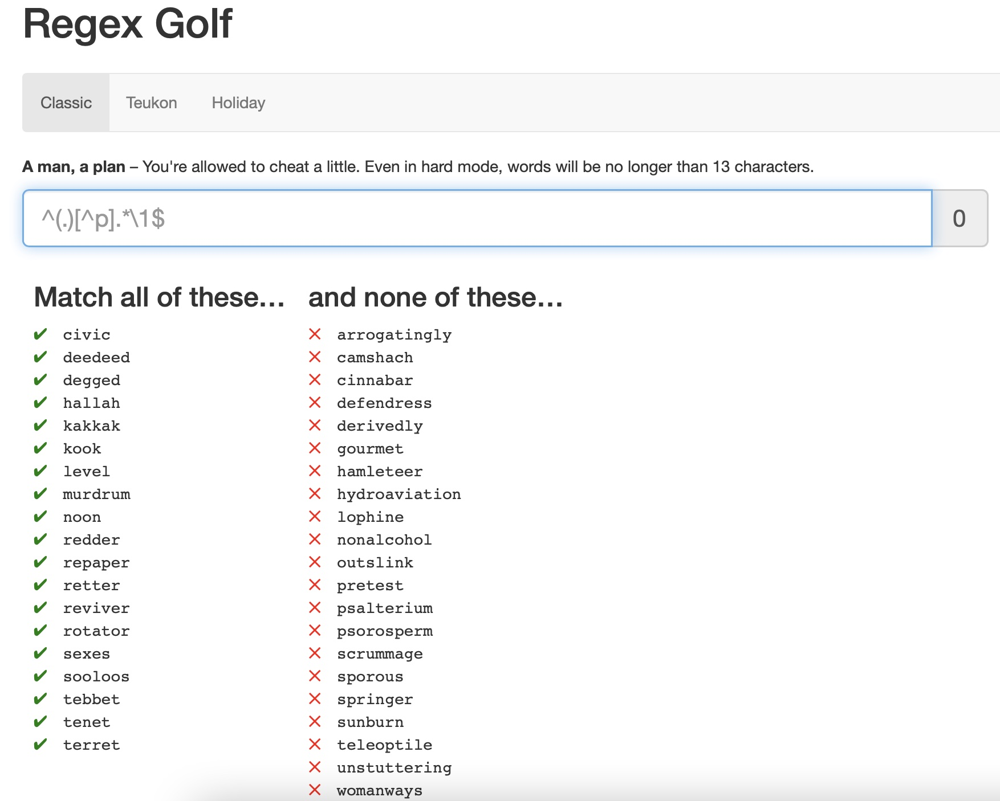
The pattern that I have noticed for the Green Column is that the beginning letter matches with the ending letter. For example the word "civic" starts with the letter "c" and ends with the letter "c".
To express this in regex language, I had to capture the start letter of the string, followed by allowing any number of alphabets, and end with the beginning letter of the string that I have captured earlier.
In Regular Expression
^(.).*\1$
Break Down
^(.) capture the start letter of the string.
.* The preceding of any character for zero or more times
\1$ End with the 1st capturing group.
Regex Reference
- ^| Start of string or start of line
- ^ | When [^ inside brackets], it means "not"
- () | Capturing Group
- . | Any characgter except line breaks
- * | Matches preceding match zero or more times
- \1 | The 1st Capturing Group
- $ | End of string or end of line
Challenge
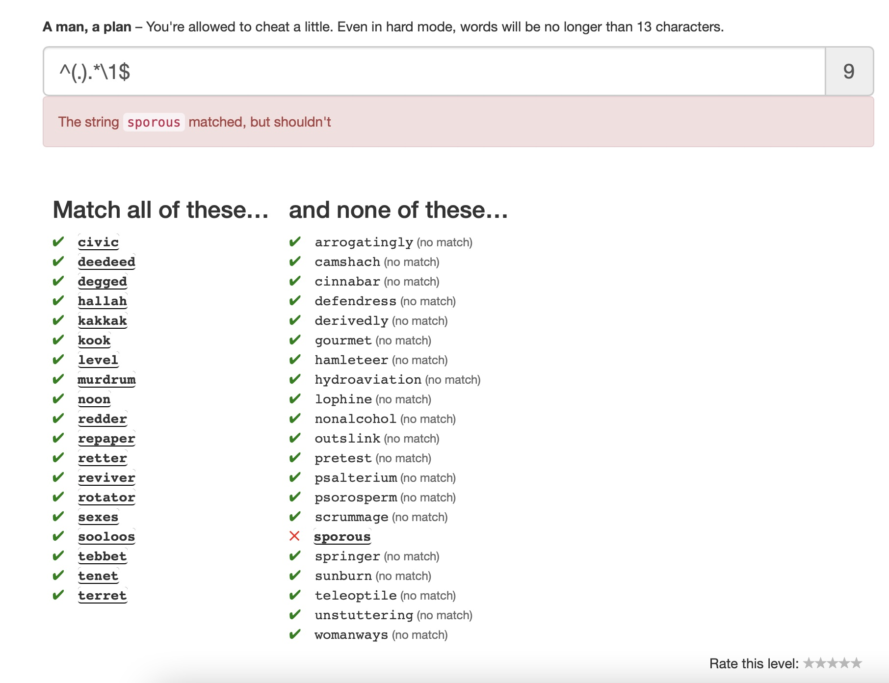
With this expression, there was an error snice one word "spornou" from tha section where the word shouldn't match the pattern begins and ends with the same letter "s". Therefore, another pattern that satisfies all the left column, but not the red column had to be found. None of the letter on the left column that is not the beginning or the end has the letter "p" in it Therefore the expression [^p] (letter that is not p) was added to make this final regex: ^(.)[^p].*\1$
Solution
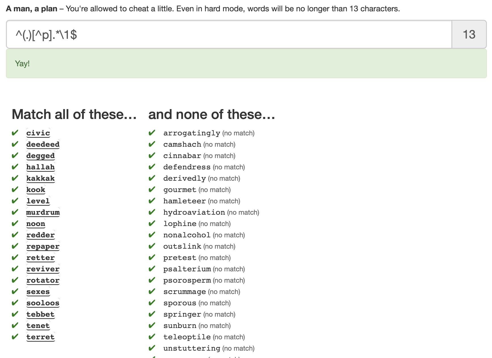
Example 2
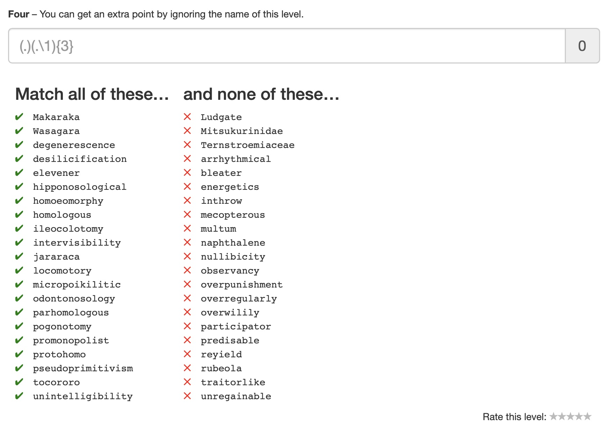
The Pattern
The pattern I found for this example is that for the words on the left column, the same letters are repeating at least three times with a random word in between. For example, for the word "Makaraka", the letter "a" is repeating three times. M a k a r a ka.
To write this, the regex should be representing such pattern
1) a random letter
2) a repeating letter
3) step 1 & step 2 is repeated 3 times consequtively
Solution!
(.)(.\1){3}
Break Down
(.) capture any alphabet (1st capturing group)
(.\1) any alphabet followed by 1st capturing group(2nd capturing group)
{3} repeat the 2nd capturing group for 3 times.
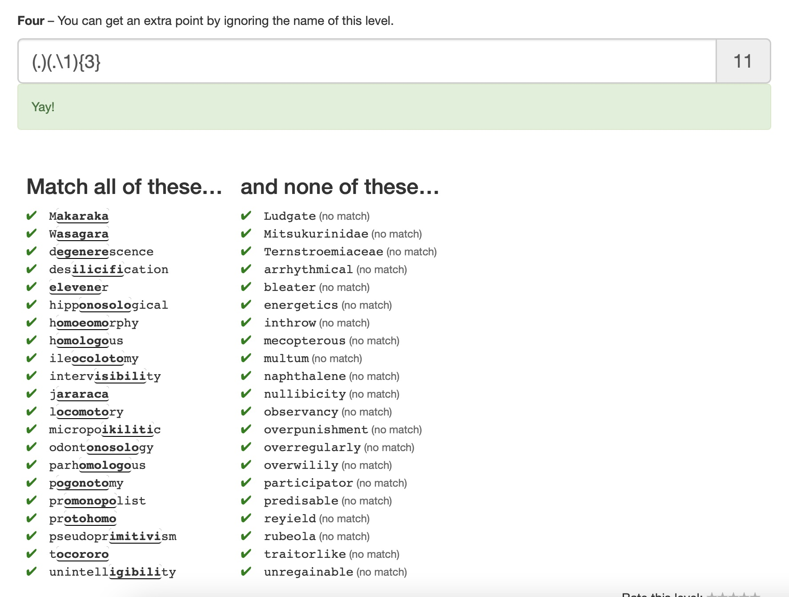
| Regular Expression Crossword
Another game to exercise regex is Regular Expression Crossword. It is a game similar to sudoku or the traditional crossword puzzle, where you guess the correct letters in horizontal and vertical lines of a grid.
Click
here to play the game.
Example 1
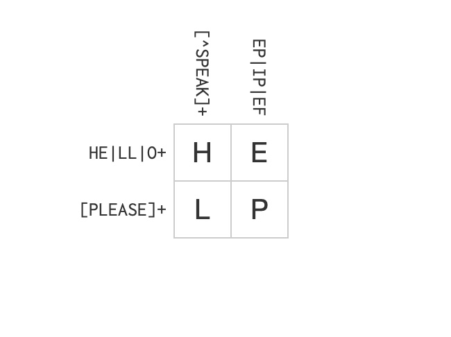
Regex Reference
- | | Alteration/OR operand
Example 2
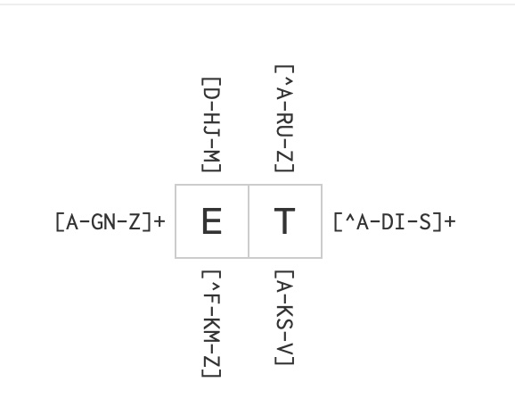
Regex Reference
- [x-y] | one of the characters in the range from x to y
- [^x-y] | one of the characters not in the range from x to y
| Regex Syntax Resource
Here are some of the useful resources to learn regex syntax.
page link
| Regex Experiment in Sublime Text
After learning regular expression syntax, and practicing it with online games, I have experimented with using Regular Expressions in a text editor Sublime text.
I wanted to find a text that will give me a variety of text that has a variety of number, characters, and punctuations to expriment with. Recently my friends asked me if I have tried buying grocery at Whole Foods and asked if it is worth getting organic food from there. Inspired from this conversation, I found a Trader Joe's vs. Whole Foods Price comprison article
Here that analyzes which grocery store is better, to experiment regular expression.
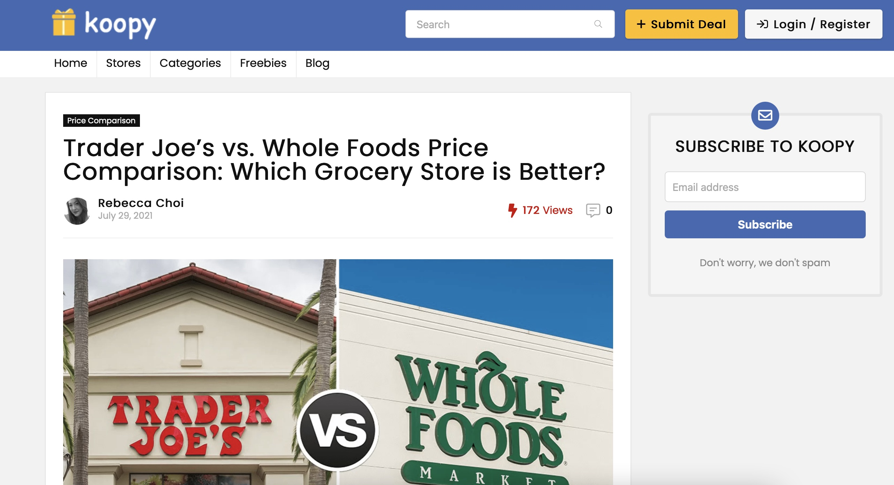
I have copied the text from this article to Sublime text.
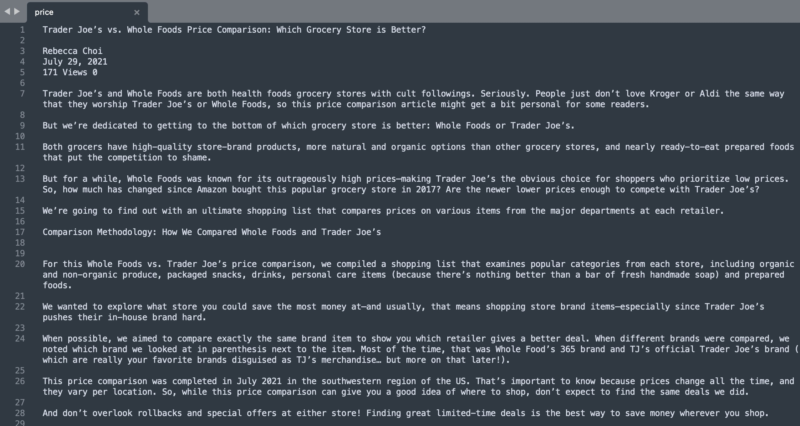
Experiment 1
Search for $ Food Item Prices
The pattern for the price text is that it starts with the dollar sign "$", followed by number(s), one decimal point, followed by more numbers. This in regular expression is:
\$\d+(?:\.\d+)?
To breakdown:
\$ : find character $
\d+ : find 1 or more digits
?: : the preceding item is optional and matched at most once (decimal point is optional and it should be only used at most once)
\.+ : decimal point
\d+ : find 1 or more digits
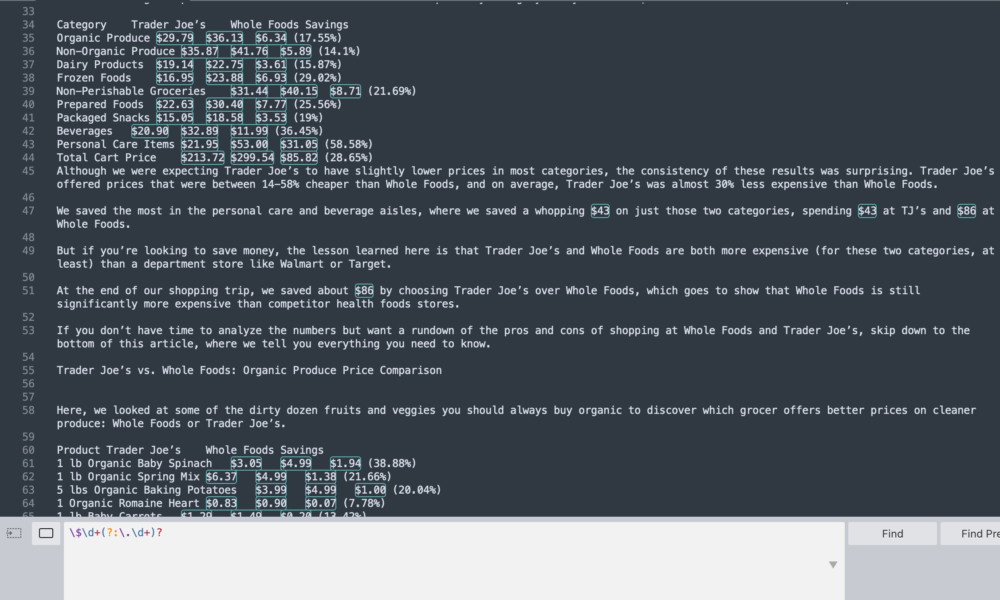
Experiment 2
Words that Starts and Ends with the Same Letter
Inspired by the
Regex Golf Example 1, I wanted to search for how many words in this text starts and ends with the same letter.
This in regular expression would be, capture the first letter as a group, follwed by any letter(s), and end with the first captured group.
(.)[a-zA-Z]*\1$
Regex Reference
To breakdown:
(.) : capture any alphabet (1st capturing group)
[a-zA-Z]* : a string with letters
\1$ : end with the 1st capturing group
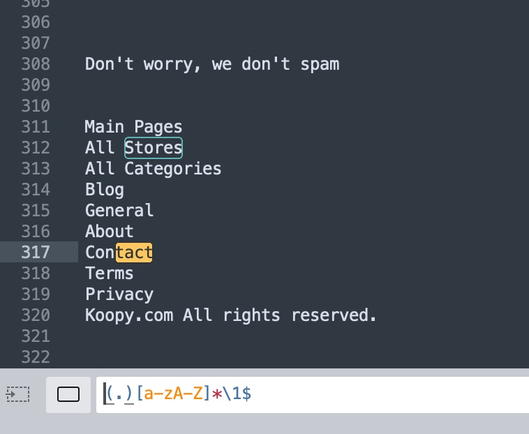
With this, I was able to find words like Stores and Savings but it also included searches like tact part for the word Contact. Therefore, I added \b tag to match the beginning and the end of a word.
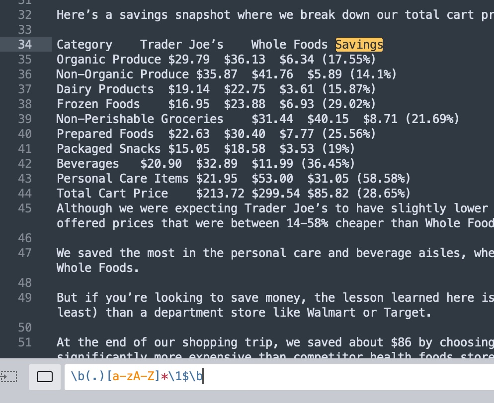
Regex Reference
\b : matches the empty string at the beginning of a word.
| Reflection & Evaluation
For this week, I have learnt the concept of regular expressions, some basic syntax, and exercised with regex using online regex game, and using Sublime Text editor. Regex online games were really fun to play. I really enjoyed the process of finding common patterns of the text and convert them in regular expression. I want to continue my skills and try using regular expressions, JavaScript, and the p5.js library for DOM manipulation like
this example made by Prof. Daniel Shiffman.